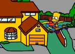
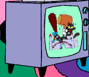
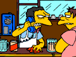

BIENVENIDO A LA PARADA DE DESCANSO MÁS
AMIGABLE DE LA AUTOPISTA DE LA INFORMACIÓN.
Los editores de The Springfield Shopper están encantados de anunciar la gran inauguración de nuestro avanzado sitio web de la ciudad. Aquí podrás conocer a nuestros estimados ciudadanos, recorrer nuestros monumentos históricos, descubrir nuestra fascinante historia y estar al tanto de las últimas noticias.
Comienza tu visita con Bart mientras te lleva en un recorrido vertiginoso por Springfield en monopatín.

Skate Board Bart
¡Bart recorre Springfield a toda velocidad!
Visita el encantador hogar de Homer y Marge Simpson, donde podrás conocer y saludar a la primera familia de Springfield. No olvides hacer clic en el televisor para ver una presentación especial del show de Itchy and Scratchy. ¡Impulsado por Futurewave!

El show de Itchy and Scratchy
Conoce a la élite de Springfield en Moe's Tavern. ¡Asegúrate de usar el teléfono mientras estás allí! Impulsado por Duff Beer.

¿Eres tú, mocoso?
Pasa por el Kwik E Mart de Apu para disfrutar de una amplia selección de delicias sabrosas. Vuelve pronto... estamos en construcción.
¡Habrá más por venir! ¡Vuelve a menudo y acompáñanos en nuestro crecimiento!
Próximos episodios
MINIMARATÓN DE LOS SIMPSONS LLENOS DE DIVERTIDO TERROR EL 27 DE OCTUBRE
El público disfrutará de dos horas de trucos y sorpresas de la familia más divertida de Estados Unidos cuando se emitan cuatro episodios de LOS SIMPSONS uno tras otro el domingo 27 de octubre de 7:00 a 9:00 PM, hora del este/hora del pacífico.
Nota: En caso de que se juegue el séptimo partido de la Serie Mundial en esta noche, se emitirá una hora de LOS SIMPSONS el jueves 31 de octubre de 8:00 a 9:00 PM, hora del este/hora del pacífico.
Una repetición de Treehouse of Horror VI del año pasado de 8:00 a 8:30 PM, hora del este, hora del pacífico, parodia las películas de monstruos de la década de 1950, Pesadilla en la calle Elm y un memorable episodio de The Twilight Zone con Homer y Bart en 3D. Fecha de emisión original: 29 de octubre de 1995
Inmediatamente después, de 8:30 a 9:00 PM, hora del este/hora del pacífico, se transmitirá un nuevo episodio titulado Treehouse of Horror VII, que deleitará a hombres y monstruos con tres aterradoras historias: Bart y Lisa descubren al demente hermano gemelo de Bart encadenado en el ático; Lisa crea un universo alternativo en un envase de margarina y los habitantes la perciben como Dios y a Bart como el Diablo; y cuando los extraterrestres Kang y Kodos secuestran al presidente Clinton y al candidato republicano Bob Dole en vísperas de las elecciones, Homer, el único testigo, debe detenerlos antes de que sea demasiado tarde.
Derechos de autor y TM, 1996, FOX Broadcasting Company.